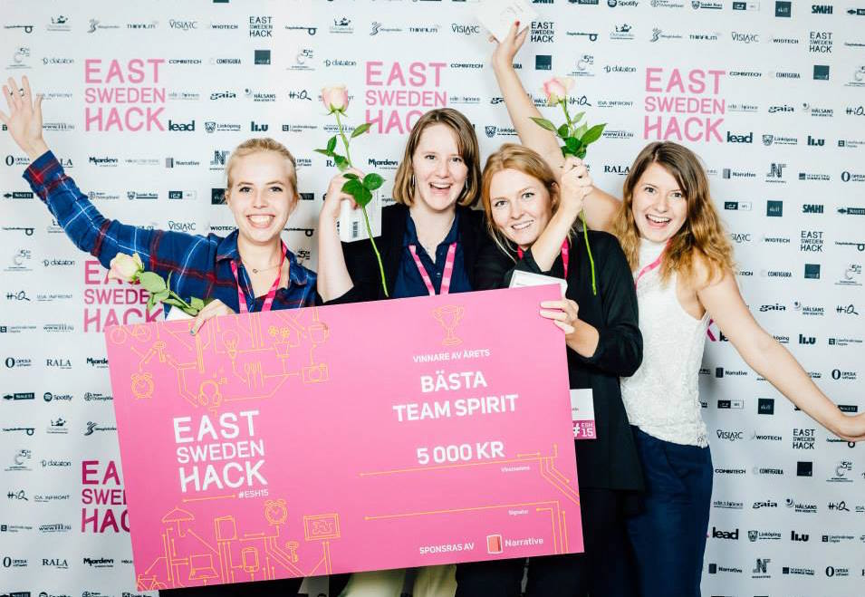
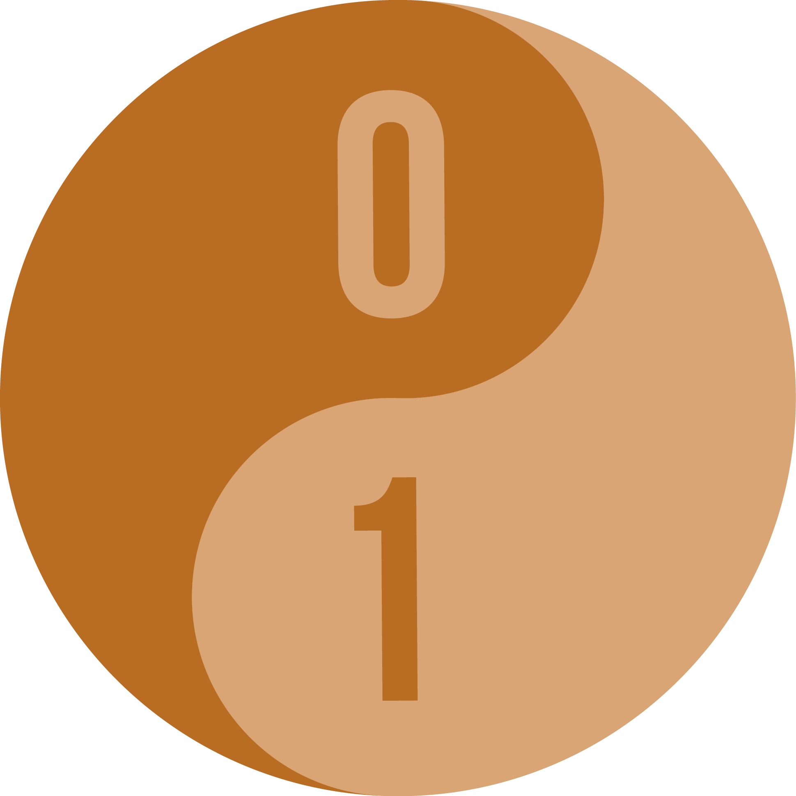

Yrkeserfarenheter
Systemutvecklare, Saab, November 2014-
Arbetar som systemutvecklare på Saab Aeronautics. Teamet arbetar agilt enligt scrum och jag utvecklar dagligen i C# .Net i Visual Studio och TFS. Har även arbetat en del med test och krav. Under hösten 2015 är jag handledare genom Tekniksprånget som innebär att jag handleder två gymnasiestudenter under deras 4 månaders praktik på Saab. Mer information ges på förfrågan.Utbildningar
Leda framtida talanger, kurs på 3hp 2015 (pågående)
En kurs i handledarskap och coaching framtagen i ett samarbete mellan KTH och Chalmers.Kandidatexamen i Medieteknik på LiU, 2011-2014
Utbildningen har gett mig breda datakunskaper i bland annat systemutveckling, programmering (java, c++, matlab, php, html, openGL mm) och allmän problemlösning. Utbildningen har även gett mig djupare förståelse för gruppdynamik och vad det innebär att vara en del av ett arbetsteam. Vid kandidatarbetet tillämpades arbetsmetoden agil utveckling via scrum på vårt team om 6 personer.Unga ledare, 2012-2013
SOFT:s Unga ledarutbildning med inriktning orientering. Tre utbildningshelger samt ett projekt. Mitt projekt: Projektledare för Skattjakten som är ett tredagars dagsläger för barn 7-10år.
Utmärkelser
Bästa Team Spirit, East Sweden Hack 2015
Team Pulsify, innefattande mig (Julia Nilsson), Sara Martin, Linnea Rothin och Malin Sandell, tog under East Sweden Hack 2015 priset för Bästa Team Spirit! Utfärdat av Narrative.
Meriter
Coach, CoderDojo Norrköping, 2014-
CoderDojo arrangeras ideellt av studenter vid Linköpings universitet. Träffarna är till för tjejer och killar mellan 7-17 år och som Coach har man i uppdrag att lära ut programmering. Man finns där för att stötta barnen och uppmuntrar deras idéer. CoderDojo Norrköping har nyligen startat upp en styrelsen där jag är deltagaransvarig. Jag har alltså det övergripande ansvaret för deltagarna, vilket innebär att det är jag som bjuder in deltagare och håller kontakt med dem samt ser till att de trivs.Kassör och Deltagaransvarig, CoderDojo Norrköping
CoderDojo Norrköping har nyligen startat upp en ideell förening samt bildat en styrelse där jag är deltagaransvarig och kassör (sedan 2015). I min roll som deltagaransvarig har jag det övergripande ansvaret över deltagarna, vilket innebär att det är jag som bjuder in deltagare och håller kontakt med dem samt ser till att de trivs. Som kassör har jag hand om föreningens ekonomi och jag är tillsammans med ordförande firmatecknare, var och en för sig.Projektledare för Orienering på Hyresbostäders Prova-på-vecka, 2014
Jag tillsammans med en medarbetare hade i uppgift att arrangera orienteringsövningar för barngrupper om 8-10 barn.Kassör, Medietekniksektionen, 13/14
Jag valdes ut av medlemmarna till förtroendeuppdraget som kassör vilket innebar ett stort ansvar. Tillsammans med ordförande var jag firmatecknare, var och en för sig. Min uppgift var att hålla koll på sektionens ekonomi och lägga upp en budget. Det var ett kontinuerligt arbete som krävde noggrannhet och som bland annat innefattade att hålla koll på sektionens alla inkomster och utgifter.Sekreterare för orienteringssektionen i GoIF Tjalve, 2012-2014
Min uppgift var främst att skriva protokoll och rapportera från ungdomsverksamheten. Har även tagit på mig uppdrag som banläggare, kartreviderare, tävlingsledare och hoppar även in som tränare för de mindre ungdomarna i klubben. För tillfället har jag ansvar för sektionens hemsida.B-körkort, taget 2010.
Referenser på allt ovan kan fås på förfrågan